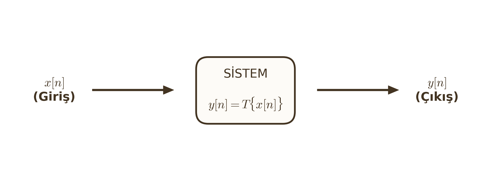

Ayrık Zamanlı Sistemler (Discrete-Time Systems)
Sinyal işlemenin kalbi olan sistemler, bir giriş işaretini ($x(n)$) alıp, belirli bir kurala göre işleyerek bir çıkış işareti ($y(n)$) üreten matematiksel yapılardır. Bu bölümde sistemlerin temel özelliklerini ve vize sınavlarında mutlaka karşınıza çıkacak 5 ana kriteri inceleyeceğiz.
Sistem Tanımı ve Blok Diyagram
Bir ayrık zamanlı sistem matematiksel olarak bir dönüşüm operatörü ($T$) ile ifade edilir:
$$y(n) = T[x(n)]$$
Burada:
- $x(n)$: Giriş (Input / Excitation)
- $y(n)$: Çıkış (Output / Response)

Sistem Özellikleri (5 Temel Kural)
Bir sistemin karakterini belirlemek için aşağıdaki 5 test uygulanır. Sınavlarda genellikle "Sistem bu özellikleri sağlıyor mu? İspatlayınız." şeklinde sorular gelir.
1. Belleksizlik (Memoryless / Static)
a) Tanım: Sistemin $n$ anındaki çıkışı, sadece o anki giriş değerine ($x(n)$) bağlıdır. Geçmiş ($n-1, n-2...$) veya gelecek ($n+1...$) değerlere ihtiyaç duymaz.
b) Matematiksel Şart: $$y(n) = f(x(n))$$
Öğrenci Notu
Eğer denklemde $x(n-1)$, $x(n+1)$ veya $\sum$ (toplam sembolü - çünkü toplamak hafıza gerektirir) görüyorsanız, o sistem Bellekli (Dinamik) bir sistemdir.
c) Örnek Soru ve Çözüm:
Soru: $y(n) = (x(n))^2$ sistemi belleksiz midir?
Çözüm: Denklemde $n$ anındaki çıkış, sadece $n$ anındaki girişin karesine bağlıdır. Başka bir zamana referans yoktur.
Sonuç: Sistem Belleksizdir.
2. Doğrusallık (Linearity)
a) Tanım: Sistem, "Süperpozisyon" (Toplamsallık ve Çarpımsallık) ilkesine uymalıdır. Yani girişlerin toplamının cevabı, ayrı ayrı cevapların toplamına eşit olmalıdır.
b) Matematiksel Şart: Giriş $x(n) = a \cdot x_1(n) + b \cdot x_2(n)$ olduğunda, çıkış da $y(n) = a \cdot y_1(n) + b \cdot y_2(n)$ olmalıdır.
c) Örnek Soru ve Çözüm:
Soru: $y(n) = 2x(n) + 3$ sistemi doğrusal mıdır? (Çok sık çıkan bir şaşırtmacalı soru!)
Çözüm:
-
Ayrı Ayrı Cevaplar:
- $x_1(n)$ için çıkış: $y_1(n) = 2x_1(n) + 3$
- $x_2(n)$ için çıkış: $y_2(n) = 2x_2(n) + 3$
- Lineer Toplam (Beklenen): $y_{beklenen} = a(2x_1(n) + 3) + b(2x_2(n) + 3) = 2ax_1(n) + 3a + 2bx_2(n) + 3b$
-
Sisteme Toplu Giriş:
- Giriş: $x_{yeni}(n) = a x_1(n) + b x_2(n)$
- Sistem Çıkışı: $y_{yeni} = 2(a x_1(n) + b x_2(n)) + 3 = 2ax_1(n) + 2bx_2(n) + 3$
-
Karşılaştırma: $y_{beklenen} \neq y_{yeni}$ (Sabit sayı olan 3 yüzünden eşitlik bozuldu).
Sonuç: Sistem Doğrusal Değildir (Non-Linear).
Kritik Sınav Bilgisi
Denklemde $+3$, $+5$ gibi girişten bağımsız sabit bir terim varsa veya $x^2(n)$, $\cos(x(n))$ gibi ifadeler varsa sistem Lineer Değildir.
3. Ötelemeyle Değişmezlik (Shift-Invariance / Time-Invariance)
a) Tanım: Giriş sinyalini $k$ kadar ötelediğimizde (geciktirdiğimizde), çıkış sinyali de şekli bozulmadan tam olarak $k$ kadar öteleniyorsa sistem zamanla değişmiyordur (LTI - Linear Time Invariant).
b) Matematiksel Şart: Eğer $x(n) \to y(n)$ ise; $x(n-k) \to y(n-k)$ olmalıdır.
c) Örnek Soru ve Çözüm:
Soru: $y(n) = n \cdot x(n)$ sistemi zamanla değişmez midir?
Çözüm:
-
Girişi Ötele: Giriş yerine $x(n-k)$ koy. $$y_1(n) = n \cdot x(n-k)$$ (Sistem kuralı: Girişi o anki zaman indisi $n$ ile çarp)
-
Çıkışı Ötele: Orijinal denklemdeki tüm $n$'leri $(n-k)$ yap. $$y(n-k) = (n-k) \cdot x(n-k)$$
-
Karşılaştırma: $n \cdot x(n-k) \neq (n-k) \cdot x(n-k)$
Sonuç: Eşitlik sağlanmadığı için sistem Zamanla Değişir (Time-Variant).
Öğrenci Notu
Eğer $x(n)$'in katsayısı olarak $n$ görüyorsanız (Örn: $n \cdot x(n)$, $\sin(n) \cdot x(n)$), o sistem %99 Zamanla Değişir.
4. Nedensellik (Causality)
a) Tanım: Sistem "kahin" olmamalıdır. Çıkış değerini hesaplamak için sadece o anki veya geçmişteki giriş değerlerini kullanmalıdır. Gelecekteki ($n+1, n+2...$) değerlere bakamaz. Gerçek zamanlı (Real-time) çalışabilmesi için bu şarttır.
b) Matematiksel Şart: $y(n)$, sadece $x(n), x(n-1), x(n-2)...$ değerlerine bağlı olabilir. $x(n+k)$ ($k>0$) yasaktır.
c) Örnek Soru ve Çözüm:
Soru: $y(n) = x(n) + x(n+1)$ sistemi nedensel midir?
Çözüm: $n=0$ anındaki çıkışı bulmak için: $y(0) = x(0) + x(1)$. Sistem şu an ($n=0$)'dayken, gelecekteki ($n=1$) giriş değerini bilmek istiyor.
Sonuç: Sistem Nedensel Değildir (Non-Causal).
5. Kararlılık (BIBO Stability)
a) Tanım: Sınırlı Giriş - Sınırlı Çıkış (Bounded Input - Bounded Output). Eğer sisteme verdiğimiz giriş sonsuza gitmiyorsa (patlamıyorsa), çıkışın da sonsuza gitmemesi gerekir.
b) Matematiksel Şart: LTI sistemler için en pratik test Dürtü Cevabı ($h[n]$) üzerinden yapılır: $$\sum_{n=-\infty}^{\infty} |h[n]| < \infty$$ Yani dürtü cevabının mutlak toplamı sonlu bir sayı olmalıdır.
c) Örnek Soru ve Çözüm:
Soru: Dürtü cevabı $h[n] = (0.5)^n u[n]$ olan sistem kararlı mıdır?
Çözüm: Toplam formülünü uygulayalım: $$S = \sum_{n=-\infty}^{\infty} |(0.5)^n u[n]| = \sum_{n=0}^{\infty} (0.5)^n$$ Bu bir sonsuz geometrik seridir ($\sum a^n = \frac{1}{1-a}$, $|a|<1$ ise). $$S = \frac{1}{1 - 0.5} = \frac{1}{0.5} = 2$$ Toplam sonlu ($2 < \infty$) olduğu için;
Sonuç: Sistem Kararlıdır (Stable).
Kritik Sınav Bilgisi
Geometrik serideki oran $|a| \ge 1$ olsaydı (Örn: $2^n u[n]$), toplam sonsuza gideceği için sistem kararsız olurdu.